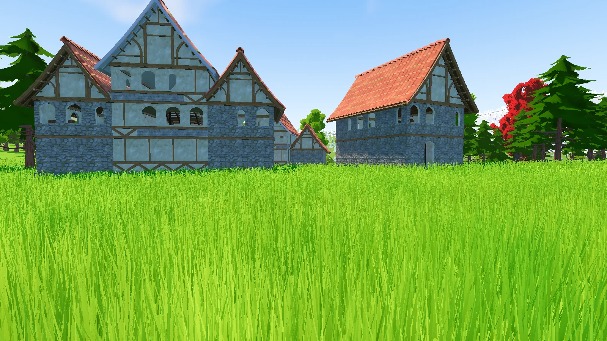

Una aventura por descubrir
Sigue los senderos.
Descubre lo inesperado.
Bosques vivos, pueblos medievales y secretos bajo la piedra. Explora una isla llena de historias, en solitario o con tus amigos.
Descargar ZIP para WindowsJuego completo · Windows 10/11 de 64 bits Alfa 0.1.16
Un vistazo al camino
Deja que el camino te sorprenda
Hay algo más allá
de cada claro.
El día invita a recorrer las villas. La noche enciende las luciérnagas. Y, a veces, una luz dorada te pide que la sigas.
Capturas reales del juego.
Nos vemos al otro lado
Tres pasos.
Todo un mundo.
El ZIP incluye el juego completo. Extrae todos sus archivos en una carpeta y abre el ejecutable para empezar a jugar.
- 01
Descarga y extrae
Guarda el ZIP del juego y usa «Extraer todo» para descomprimirlo en una carpeta.
- 02
Abre el juego
Haz doble clic en SenderosDelHorizonte.exe dentro de la carpeta extraída.
- 03
Elige tu camino
Empieza tu aventura o crea una expedición para jugar con tus amigos.
Senderos del Horizonte
La aventura
te está esperando.
La versión alfa sigue creciendo, sendero a sendero.
Alfa 0.1.16Comprobar la descarga
SHA-256 del ZIP completo:
Consulta version.json para comprobar el archivo.Ver información de la versiónAntes de salir
de expedición.
¿Puedo jugar en solitario?
Sí. Puedes explorar la isla, seguir las historias y descubrir sus secretos por tu cuenta.
¿Cómo juego con mis amigos?
Crea una expedición o busca una partida desde el menú. Para jugar por Internet, el anfitrión necesita permitir y redirigir el puerto UDP 24567 en su router. En una red local podéis conectar directamente.
¿Cómo recibo las próximas versiones?
Puedes volver a esta página y descargar el ZIP de la nueva versión. Si prefieres las actualizaciones automáticas, utiliza el instalador opcional: su lanzador busca la última versión al abrir el acceso directo.
¿Qué versión puedo descargar?
Está disponible la versión alfa para Windows 10/11 de 64 bits. Descarga el ZIP completo, extrae todos los archivos y abre SenderosDelHorizonte.exe. El juego aún no tiene firma digital, por lo que Windows puede mostrar un aviso de editor desconocido.